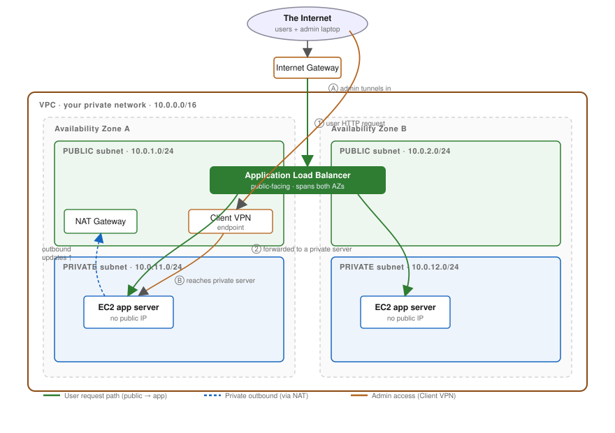

Blueprint: serving an app to the internet from a private network
The whole destination on one page. Every lesson fills in one box below.
Return here whenever you lose the thread.
Why this exists → Your mission is to understand this exact
picture well enough to draw it from memory and trace a request through it. This page is the map;
the lessons are the territory.

The target architecture. Green = a user's request reaching your app.
Blue dashed = a private server reaching out for updates. Orange = you, the admin, tunnelling in.
The two journeys this design is built around
①→② A user loads your app
A request comes off the internet, enters the VPC through the Internet Gateway,
hits the Application Load Balancer sitting in a public subnet,
which forwards it to one of your EC2 app servers hiding in a private
subnet. The user never talks to the server directly — and the server has no public IP at all.
Ⓐ→Ⓑ You need to log into a server
Those app servers have no public IP, so you can't SSH straight in from the internet — that's the point.
Instead you connect through the Client VPN endpoint, which drops your laptop inside the
VPC's private address space. Now you can reach 10.0.11.x as if you were sitting next to it.
The one idea that unlocks the rest
A subnet is not "public" because of its name or a checkbox. It is public because its
route table sends internet-bound traffic to an Internet Gateway. Change the route,
change the nature of the subnet.[aws]
Glossary — every box, one line each
VPC (Virtual Private Cloud)
Your own private, isolated network inside AWS, defined by an IP range like 10.0.0.0/16.
Nothing gets in or out except through gateways you add.[aws]
CIDR block
The notation for an IP range. /16 = 65,536 addresses; /24 = 256.
The smaller the number after the slash, the bigger the range.[aws]
Subnet
A slice of the VPC's IP range that lives in exactly one Availability Zone. Where your
resources actually sit.[aws]
Availability Zone (AZ)
A physically separate datacenter within a region. Spreading subnets across ≥2 AZs is how you
survive one datacenter failing.[aws]
Public subnet
A subnet whose route table has a route to the Internet Gateway. Things here can have public IPs.
Private subnet
A subnet with no route to the Internet Gateway. Your app servers live here, unreachable from the open internet.
Route table
The list of rules ("to reach X, send traffic to Y") attached to a subnet. This is what makes a
subnet public or private.[aws]
Internet Gateway (IGW)
The one door between your VPC and the public internet. Attaching it + routing to it is what
makes public subnets public.[aws]
NAT Gateway
A one-way valve: lets private servers reach out to the internet (for updates) while
blocking anything from reaching in. Bills per hour and per GB.[aws]
Application Load Balancer (ALB)
The public front door for your app. Takes internet requests and spreads them across your
private app servers; the servers stay hidden.[aws]
EC2 app server
The virtual machine actually running your app. Lives in a private subnet, no public IP.
Security Group
A stateful firewall wrapped around each resource (e.g. "only accept traffic from the ALB").
Instance-level.[aws]
Client VPN
A managed VPN endpoint that puts your laptop inside the VPC, so you can administer
private servers that have no public IP.[aws]
Cost radar (for when you build)
Most of this picture is free to define. The meters that run are: NAT Gateway
(per hour + per GB), Client VPN (per association-hour + per connection-hour), the
ALB (per hour + per capacity unit), and each public IPv4 address (~$0.005/hr).
[aws]
Read the source of truth
AWS's own tutorial “VPC with servers in private subnets and NAT”
builds almost exactly this diagram, with real route tables and security-group rules. It's the anchor for the whole course.
This is your compass, not a test. You are not expected to know all of this yet — the lessons
fill it in one box at a time. When any box here feels fuzzy, ask me and we'll zoom in.
AWS Networking course · reference/blueprint · built 2026-07-13